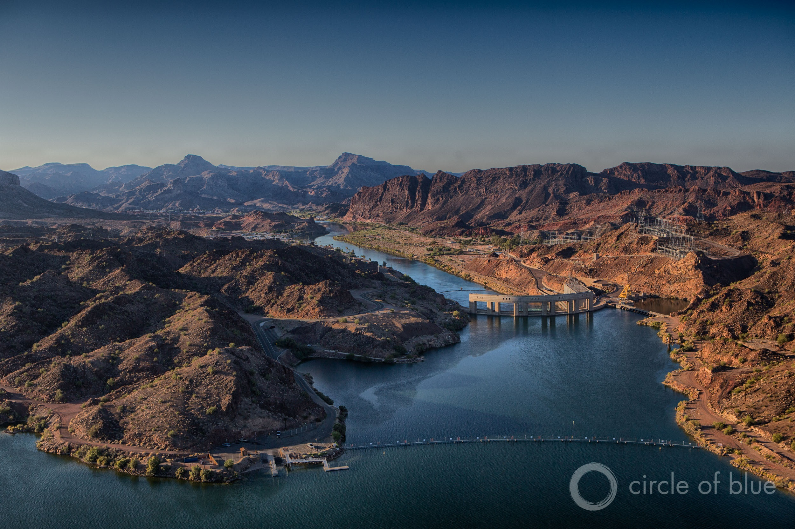

Afghanistan Green Jobs Program Targets Kabul’s Groundwater Depletion
Afghanistan’s government is employing some 40,000 workers to construct water-retention systems designed to alleviate a supply squeeze in the capital of Kabul.The workers are jobless because of the Covid-19 pandemic.
Groundwater levels in Kabul, one of the world’s fastest-growing cities, fell by about a meter per year over the last two decades.With unemployment soaring, the government is putting idle labor to work on one of the capital’s most conspicuous problems.
Mohammad Mustafa Naveed, a spokesperson for the National Development Corporation, the agency that is heading up the project, told the Thomson Reuters Foundation that the goal is to improve groundwater storage and air quality while providing green space for residents.
'Planned to run for at least a year, the Kabul water project is paying laborers at least 300 afghanis ($3.90) per day to dig close to 150,000 trenches, along with 17 small dams and spillways, on the outskirts of the mountainous Afghan capital. The network of trenches focused on six locations will store and absorb the rainwater and snowmelt Afghanistan gets in the winter and spring, but which is usually wasted through flash flooding, Naveed explained.'
Posted On: 2020-06-17T00:00:00
Posted By: Circle Blue

Content Date: 2020-06-17
Download Date: 2021-05-13
Document ID: L0C04BPQE